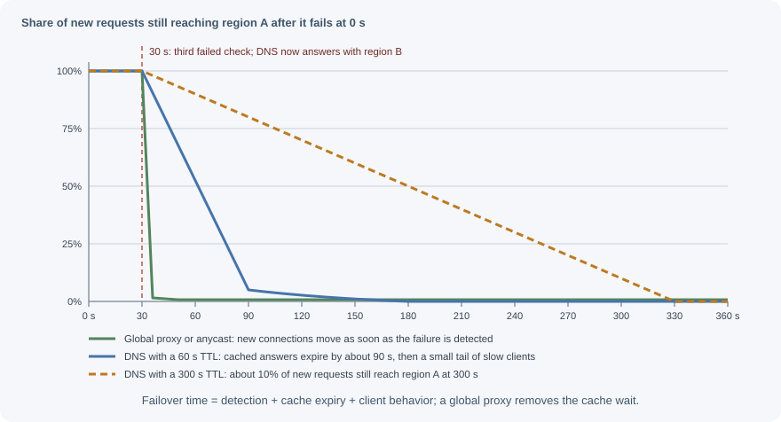

Global Traffic Management¶
Once a service runs in more than one region, something has to decide which region each user reaches, and how fast traffic moves when a region fails. That decision can be made by DNS (different answers for different users), by the network itself (anycast: one address announced from many places), or by a global layer 7 proxy at the edge (a CDN or global load balancer that picks a region for every request). This lesson explains each mechanism: GeoDNS and latency-based, weighted, and failover routing with Route 53, Google Cloud DNS, Azure Traffic Manager, and Cloudflare; anycast; global L7 load balancers and CDN edges; why DNS TTLs and resolver caches limit how fast failover can be; and why health checks for global routing run from many locations at once.
The previous lesson covered the load balancer inside one region; the next, multi-AZ and multi-region architecture, covers what has to be true of the application and its data before a second region can actually take traffic.
Why it matters¶
Distance is latency, and physics sets the floor. Light in optical fiber covers roughly 200,000 km per second, so the 15,700 km between Sydney and northern Virginia cost at least 157 ms per round trip before any real-world routing detours. A new HTTPS connection with TLS 1.3 needs two round trips before the first request byte (TCP, then TLS), so a user in Sydney waits over 300 ms for a server in Virginia to even start working, against about 20 ms for an edge location in their own city. Global traffic management is how users reach something nearby.
It is also how a regional outage becomes a short blip instead of a long one. If failover depends on DNS records with a one-hour TTL, users keep reaching the dead region for up to an hour. If it depends on an anycast address or a global proxy, new connections move within seconds of detection. The design choice made on a quiet day sets the length of the worst outage.
Real-world usage¶
- Google SRE book. The chapter Load Balancing at the Frontend describes DNS as Google's "first layer of load balancing", explains why "load balancing with DNS on its own is not sufficient", and follows it with a second level based on virtual IP addresses handled by network load balancers.
- Amazon Route 53. The documentation on how Route 53 determines whether a health check is healthy explains that health checkers in several AWS Regions probe each endpoint independently and that "If more than 18% of health checkers report that an endpoint is healthy, Route 53 considers it healthy", which makes a false failover caused by one checker's network trouble very unlikely.
- Amazon Builders' Library. In Reliability, constant work, and a good cup of coffee, AWS explains that Route 53 health check aggregators send "a fixed-size table of health check statuses" to the DNS servers every few seconds, whether or not anything changed, so a mass failure does not create a surge of extra work at the worst moment.
- Netflix. The post Active-Active for Multi-Regional Resiliency describes users being "geo-DNS routed to the closest AWS Region, with a rough split of 50/50%", with Netflix's Zuul gateway in front of every edge service so traffic can also be proxied between regions.
- AWS Global Accelerator. The how it works guide describes two static anycast IP addresses served from AWS edge locations; when an endpoint becomes unhealthy, Global Accelerator "instantly begins directing traffic for all new connections to another available endpoint", without any DNS change.
Popular tools and providers: Amazon Route 53 (with Application Recovery
Controller), AWS Global Accelerator, and CloudFront; Google Cloud DNS
routing policies, the global external Application Load Balancer, and Cloud
CDN; Azure Traffic Manager and Azure Front Door; Cloudflare Load Balancing
and CDN; and the dig tool for checking what each resolver sees.
How it works¶
The layers of global routing¶
| Layer | Decides | Granularity | Reacts to failure in | Examples |
|---|---|---|---|---|
| DNS steering | Which address a client receives | Per resolver, cached for the TTL | Detection plus TTL plus client caching: tens of seconds to hours | Route 53, Cloud DNS routing policies, Traffic Manager, DNS-only Cloudflare load balancers |
| Anycast | Which location the packets for one address reach | Per network path | Seconds to minutes (BGP convergence); new connections first | Global Accelerator, CDN and DNS networks, Google's global front end |
| Global L7 proxy | Which region or origin each request goes to | Per request | Seconds after detection | Google global external Application Load Balancer, Azure Front Door, CloudFront, proxied Cloudflare load balancers |
| Regional load balancer | Which instance serves the request | Per request or connection | Seconds | Covered in load balancers in depth |
Most global services stack them: DNS hands out an anycast address, the anycast network delivers the user to a nearby edge, and the edge proxy chooses a healthy region for each request.
DNS-based routing¶
An authoritative DNS server for api.taskflow.example.com can give
different answers to different queries. The common policies, using Route 53
names (other providers offer the same ideas under other names):
| Policy | Answer chosen by | Typical use |
|---|---|---|
| Simple | One fixed record | One endpoint |
| Weighted | Configured weights (0 to 255) | Gradual migrations between regions or providers; A/B infrastructure tests |
| Latency | Lowest measured latency from the user's network to each AWS Region | Serving users from the closest region |
| Failover | A primary record while its health check passes, otherwise a secondary | Active-passive disaster recovery |
| Geolocation | The user's continent, country, or US state | Data residency, licensing, language-specific deployments |
| Geoproximity | Distance to each resource, with an adjustable bias | Shifting the boundary between regions gradually |
| IP-based | Client IP ranges (CIDR blocks) you define | Routing known networks, such as one ISP or a partner, to a chosen endpoint |
| Multivalue answer | Up to eight healthy records at random | Simple client-side spreading with health checks |
Other providers:
- Google Cloud DNS routing policies offer weighted round robin, geolocation, and failover. Health checks are available for external endpoints in public zones and for internal load balancers in private zones.
- Azure Traffic Manager is a DNS-based router with six methods (priority, weighted, performance, geographic, multivalue, subnet), probing endpoints every 30 seconds or every 10 seconds with "fast probing", and a configurable number of tolerated failures (default 3).
- Cloudflare Load Balancing steers between pools by failover order, random weights, dynamic (measured latency), geography, proximity, or least outstanding requests. It runs either as DNS-only answers or proxied through Cloudflare's network, where it balances at layer 7 per request.
Whose location? The resolver problem¶
![Diagram: four users look up the API; a user in Frankfurt asks an ISP resolver in Frankfurt and the authoritative GeoDNS server answers eu-west-1 with 203.0.113.10; a user in Virginia asks a resolver in Virginia and gets us-east-1, 198.51.100.20; a user in Singapore whose resolver forwards the client subnet with EDNS Client Subnet gets ap-southeast-1, 192.0.2.30; a second user in Singapore using a US public resolver without ECS gets us-east-1, which is too far away; GeoDNS sees the resolver or the subnet it forwards, not the user, and answers are cached for the TTL.](../geodns-answers.svg)
The authoritative server never talks to the user: it receives the query from the user's recursive resolver. As RFC 7871 puts it, "the source address is that of the Recursive Resolver rather than of the query originator." Route 53 documents the consequence: when the resolver does not support the EDNS Client Subnet (ECS) option, it "uses the source IP address of the DNS resolver to guess where the user is"; when it does, the resolver sends "a shortened version of the user's IP address", which usually gives a more accurate location. A user whose resolver sits on another continent and sends no ECS is routed by the resolver's location, not their own.
Two more details matter in practice. Geolocation records need a default record: Route 53 cannot map every address to a location, and without a default it returns no answer for those queries. And every answer is cached by the resolver for the record's TTL, so a routing change reaches users only as caches expire.
How fast can DNS fail over?¶

Failover time with DNS is the sum of several delays:
detection request interval x failure threshold 10 s x 3 = 30 s (Route 53 "fast" checks)
DNS update health-based answers switch at once; edited records propagate
to all Route 53 name servers "generally ... within 60 seconds"
resolver caches up to the record TTL after the switch 60 s TTL -> until ~90 s
client caches browsers, operating systems, and runtimes may keep answers longer
open connections keep-alive, HTTP/2, gRPC, and WebSocket connections never re-resolve
Worked example, region A fails at t = 0:
TTL 60 s: most new requests move between t = 30 s and t = 90 s
TTL 300 s: between t = 30 s and t = 330 s
TTL 3,600 s: up to an hour, which is how a five-minute incident becomes a one-hour outage
Ways to make it faster:
- Short TTLs on records that fail over, set long before an incident: lowering a TTL during an outage does not shorten caches that already hold the old value. Short TTLs cost more queries, which is usually cheap.
- Expect stragglers. Some resolvers and clients cache longer than the TTL; RFC 8767 also lets resolvers serve stale answers when the authoritative servers are unreachable. Plan for a tail of minutes, not zero.
- Recycle long-lived connections. Clients that hold one connection for hours never notice a DNS change. Close connections after a maximum age, and make clients reconnect (with jitter) when requests fail.
- Avoid the cache entirely with anycast or a global proxy: the address never changes, so there is nothing to expire.
Health checks interact with failover in one more way. In Route 53, "If no record is healthy, all records are healthy": when every record in a group fails its check, Route 53 answers as if all were healthy rather than returning nothing. For failover records, if both the primary and the secondary are unhealthy, Route 53 returns the primary. A health check that fails everywhere at once (because it tests a shared dependency) therefore disables failover instead of triggering it.
Anycast¶
![Diagram: points of presence in London, Frankfurt, Virginia, and Singapore all announce 203.0.113.0/24 over BGP; users in the UK reach London, users in Germany reach Frankfurt, users on the US East Coast reach Virginia, and users in Singapore reach Singapore; when Frankfurt fails it withdraws its route and German users reach London after BGP converges, with no DNS change; anycast gives one stable address, failover without DNS caches, and attack traffic spread over many locations, but routing policy rather than distance picks the location, convergence takes seconds to minutes, and route changes can break long TCP flows.](../anycast-nearest-pop.svg)
With anycast, the same IP prefix is announced over BGP from many locations, and each network sends packets to whichever announcement its routing prefers, usually a nearby one. RFC 4786 (BCP 126) describes it as making a service address "available in multiple, discrete, autonomous locations."
- Failover without DNS. When a location fails, it withdraws its announcement and routers converge on the next best location, typically within seconds to minutes, for every client at once.
- Load and attack absorption. Traffic, including attack traffic, is spread across all locations instead of converging on one.
- Routing, not geography. BGP chooses paths by policy and topology, so a user can reach a location that is not the closest on a map.
- Long connections. A routing change in the middle of a TCP connection can deliver its packets to a different location that knows nothing about it; RFC 4786 warns that "especially for long running flows, there are potential failure modes using anycast". Providers engineer route stability, and many use anycast only for the first hop to their edge, where connections terminate.
AWS Global Accelerator, Google's global external load balancers, CDNs, and public DNS services all use anycast addresses.
Global layer 7 load balancers and CDN edges¶
A global L7 proxy accepts connections at the edge location nearest the user (usually through anycast), terminates TLS there, and forwards each request over the provider's backbone to a region it chooses:
- Faster connections. The TCP and TLS handshakes complete with a nearby edge (a few milliseconds per round trip), and the edge reuses warm, long-lived connections to the origin.
- Per-request routing. Each request can go to a different region based on health, latency, weights, or capacity. Google's global external Application Load Balancer, for example, sends traffic to the closest region with capacity and lets it "overflow to the next closest region" when that region is full or unhealthy.
- Failover without client involvement. The client keeps talking to the same edge address; only the edge's choice of origin changes.
The main options and their failover rules:
| Service | How it chooses an origin | Failover detail |
|---|---|---|
| Google global external Application LB | Closest healthy region with capacity, overflowing to the next | Health checks per backend; one anycast IP for all regions |
| Azure Front Door | Latency (the default), priority, weighted, or session affinity | Health probes per origin; if every probe fails, it spreads traffic across all origins |
| Amazon CloudFront origin groups | A primary origin, then a secondary for each failed request | Only GET, HEAD, and OPTIONS fail over, on the status codes you choose or on connection failures and timeouts |
| Cloudflare proxied load balancing | Steering policy across pools of origins | Monitors run from three data centers in each chosen region; an origin is healthy when most regions agree |
| AWS Global Accelerator (L4) | Endpoint groups per region with traffic dials and weights | New connections move once an endpoint is unhealthy; open connections stay until they close |
CloudFront's defaults show why the details matter: it tries to connect to the primary origin three times with a 10-second connection timeout each, so a dead origin delays every affected request by up to 30 seconds before failover. One attempt with a short connection timeout makes failover fast, at the cost of failing over on a single slow connection.
Comparing the three approaches¶
| DNS-based | Anycast L4 (Global Accelerator) | Global L7 proxy | |
|---|---|---|---|
| Failover speed | Detection plus TTL plus client caches | Detection, then new connections move | Detection, then the next request moves |
| Granularity | Per resolver | Per connection | Per request |
| Protocols | Anything | TCP and UDP | HTTP(S), gRPC, WebSockets |
| Client IP at the origin | Unchanged | Preserved for ALB, EC2 instance, and NLB-with-security-group endpoints | In headers such as X-Forwarded-For |
| Cost and lock-in | Low, portable | Per accelerator and data transfer | Highest, provider-specific features |
| Best for | Simple multi-region and DR, non-HTTP protocols | Static IPs, gaming, IoT, fast TCP and UDP failover | Global web APIs and sites |
Health checks from many locations¶
Global routing decides the fate of a whole region, so a false alarm is expensive: it moves every user, may lose recent writes (see multi-AZ and multi-region architecture), and sends traffic to a region that may not have the capacity. Global health checks therefore:
- Probe from many places. Route 53 runs checkers in eight Regions by default (you can pick at least three), and Cloudflare probes from three data centers in each region you select.
- Require agreement. Route 53 marks an endpoint unhealthy only when fewer than 18% of checkers report it healthy; Cloudflare counts an endpoint healthy when the majority of regions do. A problem in one checker's network does not move your users.
- Test what users need. A region-level endpoint (
/health/region) should fail when the region cannot serve users (its database writer is unreachable, its critical queue is down), not when one instance is busy. Shared external dependencies do not belong in it, or every region fails together. - Combine and gate. Route 53 calculated health checks combine several checks, and Application Recovery Controller adds operator-controlled switches (routing controls, zonal shift, Region switch) for teams that want a person to decide on regional failover.
When to use and when not to use¶
| Situation | Approach |
|---|---|
| One region, users mostly on one continent | A CDN for static files; no global routing yet |
| Active-passive disaster recovery, RTO of tens of minutes | DNS failover records with short TTLs and a tested runbook |
| Users on several continents, HTTP APIs | A global L7 proxy (Front Door, Google global LB, Cloudflare) or latency-based DNS to regional load balancers |
| Fixed IP addresses for clients or firewalls, TCP or UDP | Anycast entry such as Global Accelerator |
| Data must stay in one country or region | Geolocation routing with a default record, plus enforcement in the application (DNS alone is not a control) |
| Migrating between regions or providers | Weighted DNS, moving weight in small steps |
| Very fast failover for long-lived connections | Anycast or a proxy plus client reconnect logic; DNS alone cannot do it |
Do not rely on GeoDNS for anything that must be exact, such as legal data residency or licensing: resolvers lie about location, VPNs exist, and caches outlive changes.
Practical examples¶
Latency-based routing with regional health checks (Terraform)¶
# dns/latency-routing.tf: send users to the lowest-latency region that can serve them
terraform {
required_version = ">= 1.11"
required_providers {
aws = {
source = "hashicorp/aws"
version = "~> 6.0"
}
}
}
provider "aws" {
region = "us-east-1"
}
variable "zone_id" {
description = "Hosted zone for taskflow.example.com"
type = string
}
variable "regions" {
description = "Regional entry points, keyed by AWS Region"
type = map(object({
alb_dns_name = string
alb_zone_id = string
health_fqdn = string # for example api-eu-west-1.taskflow.example.com
}))
}
resource "aws_route53_health_check" "region" {
for_each = var.regions
fqdn = each.value.health_fqdn
port = 443
type = "HTTPS"
resource_path = "/health/region"
request_interval = 10 # fast checks; the default is 30
failure_threshold = 3 # about 30 s to detect a failed region
regions = ["us-east-1", "us-west-2", "eu-west-1", "ap-southeast-1"]
tags = {
Name = "taskflow-api-${each.key}"
}
}
resource "aws_route53_record" "api" {
for_each = var.regions
zone_id = var.zone_id
name = "api.taskflow.example.com"
type = "A"
set_identifier = each.key
health_check_id = aws_route53_health_check.region[each.key].id
latency_routing_policy {
region = each.key
}
alias {
name = each.value.alb_dns_name
zone_id = each.value.alb_zone_id
evaluate_target_health = true
}
}
# dns/terraform.tfvars: two regions behind one name
zone_id = "<hosted-zone-id>"
regions = {
"eu-west-1" = {
alb_dns_name = "<eu-alb-dns-name>"
alb_zone_id = "<eu-alb-hosted-zone-id>"
health_fqdn = "api-eu-west-1.taskflow.example.com"
}
"us-east-1" = {
alb_dns_name = "<us-alb-dns-name>"
alb_zone_id = "<us-alb-hosted-zone-id>"
health_fqdn = "api-us-east-1.taskflow.example.com"
}
}
- Route 53 picks the record for the Region with the lowest latency from the
user's network, then checks health. Both conditions must hold: the
region's own
/health/regioncheck passes, and (becauseevaluate_target_healthis true) the load balancer has healthy targets. If either fails, the next-lowest-latency region answers. - You cannot set a TTL on an alias record that points to an AWS resource; Route 53 uses the resource's default, which the Elastic Load Balancing guide gives as 60 seconds.
regionslimits health checking to four checker Regions (the minimum is three); the default uses all of them.
A region health endpoint¶
// src/routes/region-health.js: "can this region serve users?" for global health checks
import { Router } from "express";
const CACHE_MS = 5_000; // many checkers probe every 10 s; do the real work at most every 5 s
let cached = { at: 0, ok: false, detail: "not checked yet" };
let inFlight = null; // concurrent probes share one check
function withTimeout(promise, ms, what) {
let timer;
const timeout = new Promise((_, reject) => {
timer = setTimeout(() => reject(new Error(`${what} timed out after ${ms} ms`)), ms);
});
return Promise.race([promise, timeout]).finally(() => clearTimeout(timer));
}
async function checkRegion(db) {
// The region's own primary must answer quickly; shared external services are left out
await withTimeout(db.command({ ping: 1 }), 1_000, "database ping");
return { ok: true, detail: "database primary reachable" };
}
export function regionHealth(db, region = process.env.AWS_REGION) {
const router = Router();
router.get("/health/region", async (req, res) => {
if (Date.now() - cached.at > CACHE_MS) {
inFlight ??= checkRegion(db)
.then((result) => ({ at: Date.now(), ...result }))
.catch((err) => ({ at: Date.now(), ok: false, detail: err.message }))
.finally(() => { inFlight = null; });
cached = await inFlight;
}
res.set("Cache-Control", "no-store");
res.status(cached.ok ? 200 : 503).json({ region, ok: cached.ok, detail: cached.detail });
});
return router;
}
// src/app.js (excerpt)
app.use(regionHealth(mongoClient.db("taskflow")));
Route 53 health checkers in several Regions each probe every 10 seconds,
so the endpoint receives a steady stream of requests; caching the result
for a few seconds, and letting concurrent probes share one check, keeps
that load constant and small. The timeout lives in the application
(Promise.race) because a ping to an unreachable primary can otherwise
wait for the driver's server selection timeout (30 seconds by default). The
endpoint checks only what makes this region unable to serve: a dependency
every region shares would make them all fail at once, and Route 53 would
then treat every record as healthy.
Seeing what different resolvers answer¶
# Answer and remaining TTL from your own resolver, then from two public ones
dig +noall +answer api.taskflow.example.com
dig +noall +answer api.taskflow.example.com @8.8.8.8
dig +noall +answer api.taskflow.example.com @1.1.1.1
# Ask the authoritative server directly, pretending to be a user in a given subnet (ECS)
dig +noall +answer api.taskflow.example.com @<authoritative-name-server> +subnet=203.0.113.0/24
dig +noall +answer api.taskflow.example.com @<authoritative-name-server> +subnet=198.51.100.0/24
// scripts/dns-vantage.mjs: what does each resolver return, and for how long?
import { Resolver } from "node:dns/promises";
const name = process.argv[2] ?? "api.taskflow.example.com";
const resolvers = { system: null, google: "8.8.8.8", cloudflare: "1.1.1.1", quad9: "9.9.9.9" };
for (const [label, server] of Object.entries(resolvers)) {
const resolver = new Resolver({ timeout: 2_000, tries: 2 });
if (server) resolver.setServers([server]);
try {
const answers = await resolver.resolve4(name, { ttl: true });
const list = answers.map((a) => `${a.address} (ttl ${a.ttl}s)`).join(", ");
console.log(`${label.padEnd(10)} ${list}`);
} catch (err) {
console.log(`${label.padEnd(10)} ${err.code}`);
}
}
Run it during a failover drill: the answers show which resolvers already
switched and how many seconds each cached answer has left. Note that
resolve4 queries DNS directly, while fetch and http.request use the
operating system's resolver (dns.lookup), which may cache differently.
Best practices¶
- Put a CDN or global proxy in front of user-facing HTTP traffic before building multi-region DNS logic.
- Keep TTLs short (60 seconds or so) on every record that may fail over, and set them well before any incident.
- Health-check regions from many locations with a deep but region-local check; keep shared dependencies out of it.
- Always define a default record for geolocation routing.
- Make clients re-resolve and reconnect: cap connection age and retry with jitter after failures.
- Prefer anycast or a global L7 proxy when failover must take seconds.
- Shift traffic between regions in steps (weights), and confirm the target region has capacity before moving everyone.
- Rehearse regional failover and measure the actual time from failure to traffic moved; compare it with your recovery time objective.
In production¶
- Failover worked, but users kept reaching the dead region for an hour. Detect: traffic to the healthy region rises slowly; some resolvers still return the old address. Cause: a 3,600-second TTL on the API record, or clients holding long-lived connections. Fix: lower TTLs ahead of time, cap connection age, and consider anycast or a global proxy.
- Users in Asia are served from the US region.
Detect: latency by country shows one country far above its neighbours;
digfrom that network returns the US answer. Cause: those users rely on a resolver far away that sends no client subnet, or a geolocation record set without a default that matches. Fix: latency-based routing or a global proxy that measures from the edge, and a default record. - Every region was marked unhealthy at once, and failover did nothing. Detect: all regional health checks failing together; Route 53 keeps answering with the usual records. Cause: the health endpoint checks a shared dependency, so all regions fail, and Route 53 treats a fully unhealthy group as healthy. Fix: region-local checks only; alert on shared dependencies separately.
- Traffic flaps between regions. Detect: answers alternate every minute; logs show repeated failover and failback. Cause: a borderline health check with low thresholds, often under load that moves with the traffic. Fix: higher thresholds, a slower or manual failback, and capacity in the target region.
- The failover region fell over too. Detect: errors and latency jump in region B right after failover. Cause: region B was sized for its own users only. Fix: keep spare capacity or warm standby, scale before shifting, and move traffic in steps.
- CloudFront failover makes users wait 30 seconds. Detect: origin-failover requests have very long response times. Cause: default origin settings: three connection attempts of 10 seconds each before using the secondary. Fix: fewer connection attempts and a shorter connection timeout on the primary origin.
Important terminology¶
- Authoritative DNS server: The server that holds a zone's records and answers for them.
- Recursive resolver: The DNS server that looks up names on a client's behalf and caches the answers.
- TTL (time to live): How long a resolver may cache an answer.
- GeoDNS / geolocation routing: Answering based on the estimated location of the query.
- Latency-based routing: Answering with the region that has the lowest measured latency from the user's network.
- EDNS Client Subnet (ECS): A DNS option carrying part of the client's address from resolver to authoritative server.
- Anycast: Announcing the same IP prefix from many locations so routing delivers each user to one of them.
- BGP convergence: The time routers take to agree on new paths after a change.
- Point of presence (PoP): An edge location of a CDN or network.
- Global load balancer: An L7 proxy at the edge that chooses a region for each request.
- Origin failover: A CDN retrying a request against a secondary origin.
- Serve-stale: A resolver returning an expired answer when it cannot reach the authoritative servers.
Common mistakes and misconceptions¶
- Believing a 60-second TTL means every client moves within 60 seconds.
- Lowering the TTL during an incident and expecting it to help.
- Using GeoDNS as a security or legal control.
- Health-checking regions with a shallow endpoint, or with one that tests shared dependencies.
- Forgetting the default record in geolocation routing.
- Treating anycast as "nearest on the map".
- Failing over to a region that cannot carry the extra load.
- Assuming long-lived connections follow a DNS change.
Revision questions¶
- Why does a user in Sydney gain more from an edge location in Sydney than from a faster server in Virginia? Estimate the minimum handshake cost. (At least 157 ms per round trip; about 314 ms for TCP plus TLS 1.3.)
- Compare weighted, latency, failover, and geolocation routing. Which would you use for a gradual migration, and which for active-passive DR?
- Why can a GeoDNS server send a user to the wrong continent, and what does EDNS Client Subnet change?
- Route 53 checks every 10 seconds with a failure threshold of 3, and the record TTL is 120 seconds. When have most resolvers switched after a region fails at t = 0? (After about 30 + 120 = 150 seconds, with a tail.)
- What does Route 53 do when every record in a group is unhealthy, and why does that make shared dependencies in health checks dangerous?
- How does anycast fail over without DNS, and what is its risk for long-lived TCP connections?
- Compare DNS-based routing, Global Accelerator, and a global L7 proxy on failover speed, granularity, and protocols.
- Why do global health checks run from many locations, and why does Route 53 use an 18% threshold rather than a simple majority of failures?
Further learning¶
- Amazon Route 53: Choosing a routing policy
- Amazon Route 53: How Route 53 uses EDNS0 to estimate the location of a user
- Google Cloud: Service load balancing policies
- Azure Traffic Manager: Routing methods
- Cloudflare: Proxy modes for load balancers
- Amazon CloudFront: Origin failover
- DNS in the Networking section, and domains and DNS records and DNS migrations and troubleshooting
- Next: multi-AZ and multi-region architecture. Back to the load balancing and multi-server overview.